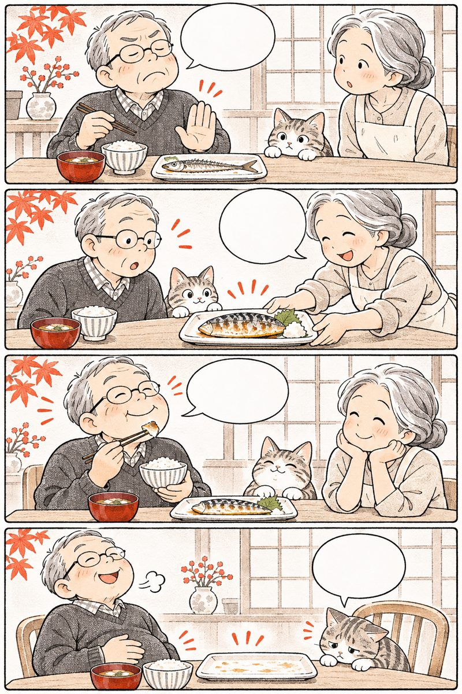

Khám sớmđo vòng eo, Ningen Dock Nhật
Văn hóa “đưa cơ thể vào ụ tàu bảo dưỡng” (Ningen Dock) và đo vòng eo định kỳ giúp người Nhật phát hiện sớm mỡ nội tạng, bảo vệ mạch máu từ khi chưa có triệu chứng.
Mục lục
Bấm vào chương để đọc.

Bảo dưỡng cơ thể
như con tàu quý
Văn hóa Ningen Dock từ năm 1954
ningen dokku to tokutei kenshin
Con tàu đi biển sau mỗi chuyến hải trình đều phải vào ụ tàu (Dock) để kiểm tra từng con ốc — cơ thể người sau tuổi 50 càng cần được bảo dưỡng định kỳ mỗi năm.
Những con số từ Tầm soát Sức khỏe Nhật
người Nhật tham gia khám chuyển hóa & đo vòng eo định kỳ mỗi năm theo luật quốc gia
ngưỡng vòng eo an toàn theo IDF/WHO châu Á: Nam <90 cm, Nữ <80 cm (chuẩn Nhật Metabo: 85/90)
tỷ lệ điều trị thành công nhiều bệnh lý tiêu hóa, tim mạch tại Nhật nhờ phát hiện ở giai đoạn chưa có triệu chứng
mốc kiểm tra máu, huyết áp, vòng eo và chức năng gan thận định kỳ cho tuổi 50+

Y học Nhật Bản gọi giai đoạn các chỉ số mới hơi lệch nhẹ là “Mibyo” (未病 — Chưa thành bệnh) — lúc chỉ cần chỉnh ăn uống, vận động là khỏe lại!
Nguồn: Hiệp hội Ningen Dock Nhật Bản (Japan Society of Ningen Dock) & MHLW Nhật Bản.
Đi khám lúc đang khỏe mới là người thông thái

Người ông đang khỏe re, đi khám làm gì? Huyết áp, mỡ máu tăng đâu có báo đau trước! Mỗi năm mình đi “bảo dưỡng Ningen Dock” 1 lần! Biết rõ từng chỉ số, ăn ngủ yên tâm hẳn!Đừng đợi cơ thể lên tiếng kêu cứu mới đi bệnh viện; hãy đi khám định kỳ với tâm thế vui vẻ mỗi năm một lần.
Vì sao các bệnh tuổi 50+ thường “im lặng”?
Lòng mạch máu, gan và thận không có nhiều dây thần kinh báo đau. Vì vậy, khi đường huyết, mỡ máu hay huyết áp tăng nhẹ suốt nhiều năm, cơ thể vẫn thấy “bình thường”:
 Đợi có triệu chứng: tốn kém, khó hồi phục
Khám ở giai đoạn Mibyo: dễ dàng đảo ngược
Đợi có triệu chứng: tốn kém, khó hồi phục
Khám ở giai đoạn Mibyo: dễ dàng đảo ngược
- Nắm bắt “cửa sổ đảo ngược”: khi xét nghiệm máu phát hiện đường huyết hoặc mỡ máu mới chớm ở ngưỡng ranh giới, chỉ cần giảm muối, đi bộ và giảm 2–3 cm vòng eo là mạch máu tự phục hồi mà chưa cần nhiều thuốc.
- Bác sĩ đồng hành (Kakaritsuke-i · かかりつけ医): mỗi gia đình Nhật đều có một phòng khám quen gần nhà lưu giữ hồ sơ sức khỏe qua từng năm để so sánh xu hướng.
Nguồn: Hiệp hội Nội khoa Nhật Bản (JSMI) & Hiệp hội Y khoa Nhật Bản (JMA).
Sợ đi khám vì “khám ra bệnh lại thêm lo”?

Tâm lý ngại đi khám vì sợ nghe tin xấu rất phổ biến ở người lớn tuổi Việt Nam. Hãy đổi góc nhìn như người Nhật:
“Thôi đừng khám, khám ra bệnh lại mất ăn mất ngủ”
Biết sớm khi mới chớm nhẹ giúp xử lý đơn giản và trút bỏ nỗi lo mơ hồ
Năm ngoái khám bình thường rồi thì 5 năm nữa mới cần khám lại
Sau tuổi 50, các chỉ số chuyển hóa thay đổi theo từng năm; nên khám 6–12 tháng/lần
Nhìn người gầy gò thì chắc chắn không bị mỡ máu hay mỡ nội tạng
Rất nhiều người tay chân nhỏ nhưng vẫn tích mỡ nội tạng quanh gan, ruột
Đi khám xong cất phiếu xét nghiệm vào tủ rồi quên luôn
Đóng thành tập hồ sơ theo năm để thấy rõ sự tiến bộ của cơ thể
Nguồn: Hướng dẫn Giáo dục Sức khỏe Quốc gia Nhật Bản.
Tự rà 9 dấu hiệu cần đi “Bảo dưỡng cơ thể”

Bấm vào những câu đúng với bố mẹ hoặc chính mình hiện tại:
Từ 2 dấu hiệu trở lên là lời nhắc nên đo vòng eo ngay tại nhà và lên lịch khám sức khỏe định kỳ trong tháng này.

Thước dây nhỏ
đọc vị mạch máu
Vì sao Nhật Bản đưa đo vòng eo vào luật quốc gia?
fukui sokutei to naizō shibō
Không cần máy móc đắt tiền, một sợi thước dây đặt ngang rốn mỗi tháng là tấm gương phản chiếu lượng mỡ nội tạng đang bao quanh gan và mạch máu.
Vì sao mỡ nội tạng nguy hiểm hơn mỡ dưới da?
Từ năm 2008, Bộ Y tế Nhật Bản triển khai chương trình Tokutei Kenshin (特定健診) bắt buộc đo vòng eo ngang rốn để phát hiện sớm hội chứng chuyển hóa (Metabo). Y học Nhật chia mỡ làm 2 loại:
- Dưới da
Nằm ngay dưới da vùng hông, đùi (dùng tay véo lên được), đóng vai trò dự trữ năng lượng và giữ ấm, ít gây hại mạch máu hơn.
- Nội tạng
Nằm sâu quanh ruột và mạc treo (làm bụng nhô tròn nhưng véo da thấy mỏng), liên tục tiết chất gây viêm làm tăng huyết áp, kháng Insulin và xơ vữa mạch.
- Tin vui
Mỡ nội tạng giống như “tài khoản tiết kiệm ngắn hạn”: khi bạn giảm ăn tinh bột tối và đi bộ đều, mỡ nội tạng sẽ tan đi đầu tiên!

Chỉ cần giảm được 3 cm vòng eo (tương đương ~3 kg mỡ nội tạng), cả huyết áp, đường huyết và mỡ máu đều đẹp lên rõ rệt!
Nguồn: Hiệp hội Nghiên cứu Béo phì Nhật Bản (JASSO) — Tiêu chuẩn diện tích mỡ nội tạng ≥100 cm².
Đừng hóp bụng khi đo vòng eo nhé ông!
 Để ông hít sâu hóp bụng vào cho số đo nhỏ nhé!
Ơ kìa! Phải thở ra tự nhiên mới đo đúng chứ!
Đặt thước ngang đúng rốn: 88 cm rồi ông ơi!
Mình đi bộ và bớt cơm tối để về dưới 85 cm nhé!
Để ông hít sâu hóp bụng vào cho số đo nhỏ nhé!
Ơ kìa! Phải thở ra tự nhiên mới đo đúng chứ!
Đặt thước ngang đúng rốn: 88 cm rồi ông ơi!
Mình đi bộ và bớt cơm tối để về dưới 85 cm nhé!
Đo vòng eo trung thực với chính mình là bước đầu tiên để bảo vệ trái tim và mạch máu não.
Cách đặt thước dây đúng chuẩn Tokutei Kenshin
Nhiều người đo ở chỗ thắt lưng quần (dưới bụng) nên số đo bị sai lệch. Chuẩn y khoa Nhật Bản quy định đo ngay tại mức ngang rốn (Umbilical level):
 Vị trí thước: đi ngang qua đúng rốn, song song mặt sàn
Nhịp thở: cuối thì thở ra bình thường, không hóp bụng
Vị trí thước: đi ngang qua đúng rốn, song song mặt sàn
Nhịp thở: cuối thì thở ra bình thường, không hóp bụng
- Vì sao đo ngang rốn? Chụp cắt lớp (CT scan) trên người Á Đông cho thấy chu vi vòng bụng đi qua rốn tương quan chính xác nhất với diện tích mỡ nội tạng 100 cm².
- Ngưỡng tham chiếu cho người Việt / châu Á: theo Liên đoàn Đái tháo đường Quốc tế (IDF) và Bộ Y tế Việt Nam, vòng eo an toàn là Nam < 90 cm, Nữ < 80 cm (tại Nhật tiêu chuẩn cho nam còn khắt khe hơn: < 85 cm).
Nguồn: Bộ Y tế, Lao động và Phúc lợi Nhật Bản (MHLW) & Bộ Y tế Việt Nam.

Nhịn ăn sáng thật khắc nghiệt để giảm bụng nhanh?
Ở tuổi 50+, giảm mỡ bụng sai cách rất dễ làm mất khối cơ bắp chân tay (gây chứng thiểu cơ Sarcopenia):
Giảm cân sai lầm
- Nhịn ăn sáng hoặc cắt sạch chất đạm làm teo cơ đùi, yếu chân
- Uống các loại trà giảm cân gây tiêu chảy, mất nước
- Chỉ nằm gập bụng (sit-up) mạnh gây đau cột sống thắt lưng
Giảm mỡ nội tạng kiểu Nhật
- Ăn đủ đạm (cá, đậu phụ, trứng, sữa) + ăn rau trước cơm
- Giảm bớt 1/3 bát cơm trắng buổi tối và hạn chế đồ ngọt
- Đi bộ bước dài 25–30 phút mỗi ngày đốt mỡ nội tạng êm ái
4 bước “Tự khám tại nhà” sáng mồng 1 hàng tháng
Bên cạnh kỳ khám ở bệnh viện mỗi năm, hãy biến sáng mồng 1 mỗi tháng thành ngày kiểm tra tại nhà:
Sau khi ngủ dậy và đi vệ sinh, ngồi yên 2 phút rồi đo huyết áp trước khi ăn sáng
Bước lên cân trong trang phục mỏng nhẹ để theo dõi sự ổn định cân nặng
Đứng thẳng hai chân rộng bằng vai, thở ra nhẹ nhàng rồi đọc số đo ngang rốn
Ghi 3 con số (Huyết áp · Cân nặng · Vòng eo) vào sổ để mang theo khi gặp bác sĩ
Làm ngay
- Treo chiếc thước dây mềm ngay cạnh máy đo huyết áp gia đình
- Đo vào cùng một khung giờ buổi sáng để so sánh chính xác
Đừng làm
- Đo vòng eo qua lớp áo len dày hoặc ngay sau khi vừa ăn no
- Siết thước dây quá chặt làm lằn sâu vào da bụng
Nguồn: Hướng dẫn Tự theo dõi Sức khỏe tại nhà — Hiệp hội Y tế Dự phòng Nhật Bản.
Kiểm tra Vòng eo ngang rốn của bạn
Mỗi 1 cm vòng eo giảm xuống tương ứng với khoảng 1 kg mỡ nội tạng được dọn bớt khỏi ổ bụng!
Hiểu rõ 5 chỉ số
làm chủ sức khỏe
Đọc bảng xét nghiệm máu dễ hiểu cho tuổi 50+
kensa kekka no yomikata
Khi cầm tờ phiếu kết quả khám sức khỏe đầy chữ viết tắt tiếng Anh, bạn chỉ cần nắm vững 5 chỉ số cốt lõi này để hiểu cơ thể mình đang nói gì.
Giải mã 3 nhóm chỉ số mạch máu quan trọng nhất
- 1. Đường huyết đói & HbA1c
Đường máu lúc đói chỉ phản ánh bữa ăn hôm trước, còn HbA1c cho biết bức tranh đường huyết suốt 90 ngày qua (từ 6,5% trở lên là ngưỡng đái tháo đường).
- 2. Bộ 3 Mỡ máu (LDL, HDL, Triglyceride)
LDL-C là mỡ dễ bám thành mạch; Triglyceride (TG) là mỡ trung tính tăng khi ăn thừa tinh bột/ngọt; còn HDL-C (≥40 mg/dL) là “chổi quét” mỡ tốt.
- 3. Lọc cầu thận (eGFR) & Men gan (AST, ALT)
Chỉ số eGFR (≥60) cho biết sức khỏe bộ lọc của thận; ăn nhạt và uống đủ nước ấm giúp bảo vệ eGFR lâu dài.
Đừng chỉ nhìn một con số lẻ loi — hãy xem xu hướng tăng hay giảm qua 3 năm liên tiếp cùng bác sĩ nhé!
Nguồn: Hiệp hội Ningen Dock Nhật Bản — Bảng phân loại kết quả xét nghiệm chuẩn.
Bí mật của chỉ số HbA1c 3 tháng
 Trước ngày khám ông nhịn ăn ngọt 2 hôm là đẹp ngay!
Không giấu được chỉ số HbA1c đâu ông ơi!
HbA1c ghi nhớ đường máu suốt 3 tháng liền đấy!
Thế thì mình phải ăn chuẩn và đi bộ mỗi ngày thôi!
Trước ngày khám ông nhịn ăn ngọt 2 hôm là đẹp ngay!
Không giấu được chỉ số HbA1c đâu ông ơi!
HbA1c ghi nhớ đường máu suốt 3 tháng liền đấy!
Thế thì mình phải ăn chuẩn và đi bộ mỗi ngày thôi!
Hồng cầu sống 120 ngày nên chỉ số HbA1c là cuốn nhật ký trung thực nhất về thói quen ăn uống suốt 3 tháng qua.
Hiệu ứng cộng gộp của “Tứ chứng Metabo”
Bác sĩ Nhật đặc biệt lưu ý khi một người có Vòng eo to đi kèm từ 2 trong 3 yếu tố (Huyết áp hơi cao + Đường huyết hơi cao + Mỡ máu hơi cao):
 Mỗi chỉ số hơi cao nhẹ: chủ quan bỏ qua
Gộp lại (Metabo): tăng tốc xơ vữa mạch máu
Mỗi chỉ số hơi cao nhẹ: chủ quan bỏ qua
Gộp lại (Metabo): tăng tốc xơ vữa mạch máu
- Dù mỗi thứ chỉ “hơi cao một chút”: khi vòng bụng dư mỡ nội tạng kết hợp huyết áp 135/85 và đường máu mấp mé cao, nguy cơ tổn thương thành mạch tăng gấp 5–10 lần so với người bình thường.
- Giải pháp gốc rễ: thay vì đợi từng bệnh nặng lên, giảm mỡ nội tạng qua bữa ăn thanh đạm và vận động sẽ hạ cả 3 chỉ số cùng lúc!
Nguồn: Ủy ban Tiêu chuẩn Chẩn đoán Hội chứng Chuyển hóa Nhật Bản.

Thấy xét nghiệm về bình thường là tự ngưng thuốc?
Đây là sai lầm nguy hiểm nhất mà các bác sĩ tim mạch thường gặp ở bệnh nhân trên 50 tuổi:
Rất nguy hiểm
- Thấy huyết áp, mỡ máu về đẹp liền tự ý bỏ thuốc bác sĩ kê
- Tự tra mạng rồi hoang mang cực độ khi thấy 1 chỉ số in đậm
- Giấu bác sĩ việc mình đang dùng thêm các sản phẩm khác
Chuẩn người bệnh thông thái
- Hiểu rằng chỉ số đẹp là nhờ thuốc đang bảo vệ; chỉ chỉnh liều khi bác sĩ dặn
- Mang cả tập kết quả cũ và các lọ đang uống tới hỏi bác sĩ
- Hỏi rõ bác sĩ 3 điều: Chỉ số cần chú ý, Cách ăn uống, Ngày hẹn tái khám
Cách chuẩn bị để kết quả xét nghiệm chuẩn nhất
Chuẩn bị đúng từ tối hôm trước giúp kết quả xét nghiệm máu và siêu âm bụng chính xác tuyệt đối:
Tối hôm trước (Trước 20h00)
- Ăn tối nhẹ nhàng trước 20h00; tránh đồ nhiều dầu mỡ, rượu bia
- Sau 21h00: Nhịn ăn hoàn toàn (nhịn đói 10–12 tiếng trước khi lấy máu)
- Xếp sẵn thẻ BHYT, CCCD, sổ khám cũ và đơn thuốc đang dùng
Sáng ngày đi khám
- Không ăn sáng, không uống sữa, cà phê hay nước ngọt trước khi lấy máu
- Có thể nhấp vài ngụm nước lọc trắng nhỏ nếu khô miệng (hoặc uống thuốc huyết áp theo dặn của bác sĩ)
- Mặc áo rộng rãi, không cài nhiều nút để dễ đo huyết áp, điện tim

Nên chọn tháng sinh nhật của mình mỗi năm làm “Tháng đi khám Ningen Dock” để không bao giờ quên!
Nguồn: Hiệp hội Bệnh viện Nhật Bản — Hướng dẫn chuẩn bị trước khi khám Ningen Dock.
Sổ theo dõi Vòng eo & Huyết áp sáng 7 ngày
Ghi số đo vòng eo ngang rốn (cm) và huyết áp tâm thu buổi sáng (mmHg) trong 7 ngày để mang trình bác sĩ (VD: 83 cm · 125 mmHg).
Vì sao bác sĩ rất quý bảng ghi tại nhà này?
Đo tại bệnh viện đôi khi bị “hội chứng áo choàng trắng” làm huyết áp tăng giả tạo; số đo buổi sáng tại nhà giúp bác sĩ đánh giá chính xác nhất!
Số liệu chỉ lưu riêng tư ngay trong điện thoại hoặc máy tính của bạn.

Giữ cơ bắp
giảm mỡ nội tạng
Thứ tự ăn “Rau trước – Đạm – Cơm cuối” kiểu Nhật
beji fāsuto to tanpakushitsu
Vòng eo tăng sau tuổi 50 không phải do “phát tướng” khỏe mạnh, mà là mỡ nội tạng tích tụ trong khi khối cơ bắp chân tay lại âm thầm hao hụt.
Khối cơ bắp là “nhà máy đốt đường & mỡ” lớn nhất
Khi đợt khám Ningen Dock báo vòng eo chạm ngưỡng Metabo, bác sĩ Nhật không bao giờ khuyên nhịn đói, mà hướng dẫn đổi thứ tự gắp thức ăn (Vege-First) và bổ sung đủ đạm lành tính.
lượng đường glucose sau bữa ăn được khối cơ bắp xương hấp thu và đốt cháy. Giữ cơ bắp đùi săn chắc chính là cách hạ đường huyết HbA1c và mỡ nội tạng bền vững nhất.

Ăn 5 đũa rau xanh và canh rong biển trước, tiếp đến là cá/đậu phụ rồi mới ăn cơm giúp đỉnh đường huyết sau ăn thấp hơn 30%!
Nguồn: Nghiên cứu Đại học Kyoto & Hiệp hội Phòng chống Béo phì Nhật Bản (JASSO).
Đổi thứ tự gắp thức ăn, vòng eo gọn hẳn
 Vòng eo 85cm rồi, tối nay ông nhịn cơm luôn!
Nhịn đói chỉ làm teo cơ đùi thôi ông ơi!
Cứ ăn đĩa rau trước, đủ cá đậu phụ rồi ăn cơm!
Sau 3 tháng eo giảm 3cm mà chân vẫn khỏe re!
Vòng eo 85cm rồi, tối nay ông nhịn cơm luôn!
Nhịn đói chỉ làm teo cơ đùi thôi ông ơi!
Cứ ăn đĩa rau trước, đủ cá đậu phụ rồi ăn cơm!
Sau 3 tháng eo giảm 3cm mà chân vẫn khỏe re!
Thay đổi thứ tự gắp thức ăn trên mâm cơm dễ thực hiện hơn gấp trăm lần việc ăn kiêng khắc nghiệt.
Hai nguyên tắc vàng trên bàn ăn tuổi 50+
Để chỉ số đường huyết và mỡ máu đẹp lên trong kỳ khám năm tới, mâm cơm chỉ cần 2 điều chỉnh nhỏ:
 1. Rau củ đi trước: tạo màng lưới làm chậm hấp thu đường
2. Đạm dễ tiêu: nuôi khối cơ bắp đốt mỡ thừa
1. Rau củ đi trước: tạo màng lưới làm chậm hấp thu đường
2. Đạm dễ tiêu: nuôi khối cơ bắp đốt mỡ thừa
- Lót dạ bằng chất xơ hòa tan: ăn rau luộc, nấm, rong biển trong 5 phút đầu bữa giúp tuyến tụy không phải tiết dồn dập hormone Insulin (hormone gây tích mỡ bụng).
- Chia đều đạm lành vào 3 bữa: mỗi bữa có 1 phần cá, đậu phụ, trứng bằng lòng bàn tay hoặc 1 ly dinh dưỡng giảm lactose giúp cơ thể tổng hợp cơ xương suốt ngày.
Nguồn: Hướng dẫn Dinh dưỡng phòng ngừa Frailty & Sarcopenia — Bộ Y tế Nhật Bản.

Mỡ máu và đường hơi cao thì chỉ ăn cháo trắng với rau?
Kiêng khem sai cách ở tuổi trung niên và cao tuổi dễ dẫn tới suy giảm khối cơ (Sarcopenia):
Kiêng khem sai cách
- Chỉ ăn cháo trắng hoặc bún làm đường huyết tăng vọt rất nhanh
- Kiêng hoàn toàn thịt cá, trứng sữa khiến cơ đùi teo nhỏ, dễ ngã
- Uống sữa thường nhiều lactose gây sôi bụng, đầy hơi khó chịu
Dinh dưỡng chuẩn Nhật
- Ăn rau trước → thức ăn đạm → cơm vừa phải ở cuối bữa
- Đủ 20g đạm mỗi bữa từ cá biển, đậu phụ, trứng, thịt nạc
- Chọn sữa dinh dưỡng người lớn công thức giảm lactose êm bụng
Thực hành bữa ăn “Rau trước – Đủ đạm” 7 ngày
Thử 7 ngày liền
Ăn rau trước cơm, đóng dấu
Lưu sổ 3 năm
thấy rõ đường dài
Sổ sức khỏe cá nhân & Bác sĩ đồng hành
kakaritsuke-i to kenkō techō
Tờ phiếu xét nghiệm năm nay chỉ là một bức ảnh chụp nhanh; ghép phiếu của 3–5 năm liên tiếp lại mới thành bộ phim rõ nét về cơ thể bạn.
Chuẩn cân nặng vàng BMI 22 & Bác sĩ đồng hành
Người Nhật không bao giờ vứt phiếu xét nghiệm cũ. Họ kẹp tất cả vào một bìa hồ sơ mỏng theo thứ tự năm và luôn lấy mốc BMI 22 làm cân nặng chuẩn lý tưởng nhất.
tức là Chiều cao (m) × Chiều cao (m) × 22 — mức cân nặng có tỷ lệ mắc bệnh tim mạch, tiểu đường, huyết áp thấp nhất theo thống kê dịch tễ học Nhật Bản.
Đồng thời, mỗi gia đình Nhật đều có một Bác sĩ đồng hành (Kakaritsuke-i · かかりつけ医) và cuốn Sổ tay thuốc cá nhân (Okusuri Techo) để bác sĩ nắm rõ lịch sử cơ thể nhiều năm liền.
Một chỉ số tuy còn trong ngưỡng bình thường nhưng tăng đều 3 năm liên tiếp vẫn là tín hiệu quý giá để chỉnh lối sống ngay!
Nguồn: Hiệp hội Y khoa Nhật Bản (JMA) — Chương trình Kakaritsuke-i cho người trên 50 tuổi.
Cuốn bìa hồ sơ 5 năm trong ngăn kéo nhà Sato
 Sao ông giữ kỹ cả xấp phiếu khám 5 năm thế?
Để bác sĩ so sánh xu hướng tăng giảm chứ bà!
Thêm cuốn sổ thuốc và 3 câu hỏi viết sẵn ra giấy!
Bác sĩ khen nhìn biểu đồ 5 năm là rõ ngay gốc bệnh!
Sao ông giữ kỹ cả xấp phiếu khám 5 năm thế?
Để bác sĩ so sánh xu hướng tăng giảm chứ bà!
Thêm cuốn sổ thuốc và 3 câu hỏi viết sẵn ra giấy!
Bác sĩ khen nhìn biểu đồ 5 năm là rõ ngay gốc bệnh!
Mang theo kết quả khám cũ giúp bạn tiết kiệm chi phí xét nghiệm trùng lặp và giúp bác sĩ chẩn đoán chính xác gấp bội.
Vì sao cần lưu phiếu khám 3 năm & Sổ tay thuốc?
Cơ thể mỗi người có một “ngưỡng nền” riêng; so sánh với chính mình năm ngoái quan trọng không kém so với bảng chuẩn chung:
 Xu hướng 3 năm: nhận ra đà tăng sớm
Sổ thuốc Okusuri: ngừa tương tác thuốc
Xu hướng 3 năm: nhận ra đà tăng sớm
Sổ thuốc Okusuri: ngừa tương tác thuốc
- Phân biệt bất thường cũ và mới: khi thấy một nốt vôi hóa nhỏ hoặc chỉ số lệch nhẹ, phiếu khám 3 năm trước giúp bác sĩ biết ngay đó là dấu vết lành tính cũ hay mới xuất hiện.
- An toàn khi đi nhiều chuyên khoa: người trên 50 tuổi thường khám cả tim mạch, xương khớp, mắt; sổ thuốc giúp các bác sĩ không kê trùng hoạt chất.
Nguồn: Cẩm nang Người bệnh thông thái — Bộ Y tế, Lao động và Phúc lợi Nhật Bản.

Phiếu khám năm ngoái xem xong rồi thì vứt đi cho gọn?
Xem kết quả xong bỏ phiếu xét nghiệm cũ đi cho đỡ chật tủ
Kẹp vào 1 bìa hồ sơ theo năm và chụp ảnh lưu vào album “Sức khỏe” trên điện thoại
Đi khám không kể các loại thảo dược, viên bổ sung đang uống
Báo đầy đủ mọi thuốc và thực phẩm bổ sung để bác sĩ đánh giá men gan, đông máu chuẩn xác
Vào phòng khám mới nhớ gì hỏi nấy, ra về lại quên mất ý chính
Viết sẵn 3 câu hỏi ngắn gọn ra mảnh giấy nhỏ trước khi vào gặp bác sĩ
Tính cân nặng chuẩn BMI 22 theo chiều cao
Thử 7 ngày
Cân buổi sáng & uống thuốc đúng giờ, đóng dấu
Bốn trụ cột
tầm soát tuổi 50+
Tiêu hóa · Mật độ xương · Đáy mắt · Răng 8020
zenshin kenkō chekku
Ngoài xét nghiệm máu, tuổi 50+ cần 4 lịch hẹn bảo dưỡng định kỳ: đường tiêu hóa, mật độ xương DEXA, soi đáy mắt và chăm sóc răng nướu theo phong trào 8020.
Phong trào “8020” & Tầm soát khi chưa đau
Tại Nhật Bản, Bộ Y tế và Hiệp hội Nha khoa phát động phong trào quốc gia “8020” (80 tuổi vẫn giữ được ít nhất 20 chiếc răng thật) song hành cùng lịch tầm soát tiêu hóa và mật độ xương.
- 1. Đường tiêu hóa (Hằng năm / 2 năm)
Xét nghiệm tìm máu ẩn trong phân (FOBT) mỗi năm và nội soi dạ dày – đại tràng định kỳ giúp xử lý sớm các polyp nhỏ từ khi chưa có triệu chứng.
- 2. Mật độ xương DEXA & Soi đáy mắt (1–2 năm/lần)
Đo mật độ xương cột sống – cổ xương đùi (nhất là phụ nữ sau mãn kinh) và soi đáy mắt, đo nhãn áp để bảo vệ thị lực tuổi già.
- 3. Khám răng & lấy cao răng (6 tháng/lần)
Trị viêm nha chu không chỉ giữ răng nhai ngon mà còn ngăn vi khuẩn khoang miệng xâm nhập mạch máu gây viêm nội mạc.
Chọn “Tháng sinh nhật của mình mỗi năm” làm tháng đi khám Ningen Dock là mẹo hay nhất để cả đời không quên lịch hẹn!
Nguồn: Trung tâm Ung thư Quốc gia Nhật Bản (NCC) & Hiệp hội Nha khoa Nhật Bản.
Món quà tháng sinh nhật ý nghĩa nhất
 Tháng sinh nhật mẹ, tụi con đặt lịch Ningen Dock!
Kiểm tra đủ cả máu, mật độ xương, mắt và răng!
Bác sĩ bảo 20 chiếc răng vẫn chắc, mạch máu êm!
Có sức khỏe tốt là món quà quý nhất của cả nhà!
Tháng sinh nhật mẹ, tụi con đặt lịch Ningen Dock!
Kiểm tra đủ cả máu, mật độ xương, mắt và răng!
Bác sĩ bảo 20 chiếc răng vẫn chắc, mạch máu êm!
Có sức khỏe tốt là món quà quý nhất của cả nhà!
Đưa bố mẹ đi khám sức khỏe định kỳ mỗi năm chính là món quà báo hiếu thiết thực và bình an nhất.
Phát hiện ở “Giai đoạn không triệu chứng”
Sự khác biệt lớn nhất giữa khám định kỳ Ningen Dock và đi khám khi đã đau nằm ở khả năng phục hồi hoàn toàn:
 Phát hiện sớm giai đoạn I: điều trị nhẹ nhàng >90%
Răng khỏe 8020: nhai kỹ, giảm nguy cơ sa sút trí tuệ
Phát hiện sớm giai đoạn I: điều trị nhẹ nhàng >90%
Răng khỏe 8020: nhai kỹ, giảm nguy cơ sa sút trí tuệ
- Chặn đứng từ tổn thương tiền thân: cắt một polyp đại tràng lành tính qua nội soi chỉ mất 15 phút nhưng phòng ngừa được biến chứng nguy hiểm 5–10 năm sau.
- Nhai khỏe giữ não trẻ: nghiên cứu tại Nhật cho thấy người cao tuổi giữ được từ 20 răng trở lên (hoặc làm răng giả vừa khít) có nguy cơ suy giảm trí nhớ thấp hơn hẳn.
Nguồn: Hiệp hội Y học Dự phòng Nhật Bản & Nghiên cứu Lão khoa Aichi.

Bụng êm, răng không nhức thì cần gì đi kiểm tra?
Bụng dạ êm ru, đi ngoài bình thường thì không cần tầm soát tiêu hóa
Polyp nhỏ hoàn toàn không gây đau; xét nghiệm phân và nội soi định kỳ mới thấy sớm
Rụng răng và loãng xương ở tuổi 60–70 là quy luật không tránh được
Lấy cao răng 6 tháng/lần và đo mật độ xương sớm giúp giữ răng chắc, xương khỏe
Ngại đi khám vì sợ tốn kém và mất thời gian chờ đợi
1 buổi sáng khám định kỳ mỗi năm tiết kiệm gấp trăm lần chi phí điều trị muộn
30 giây lắng nghe nhịp thở & cơ thể mỗi sáng
Chúc mừng bạn đã đọc trọn Cẩm nang Số 10! Hãy giữ lịch khám Ningen Dock đều đặn mỗi năm để sống khỏe, chủ động trăm tuổi nhé.